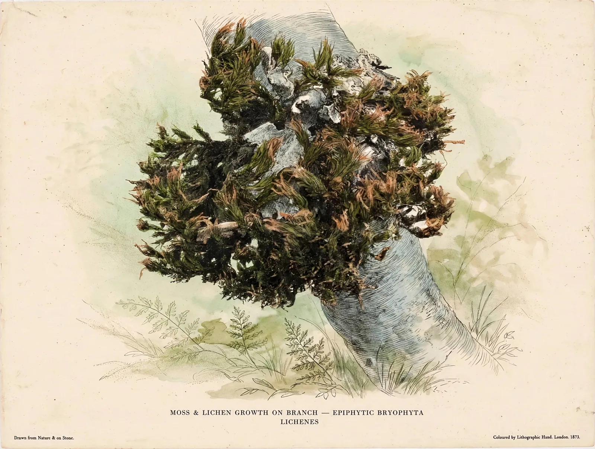
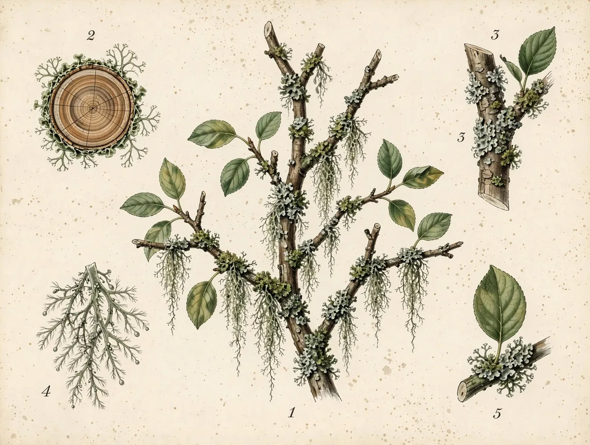
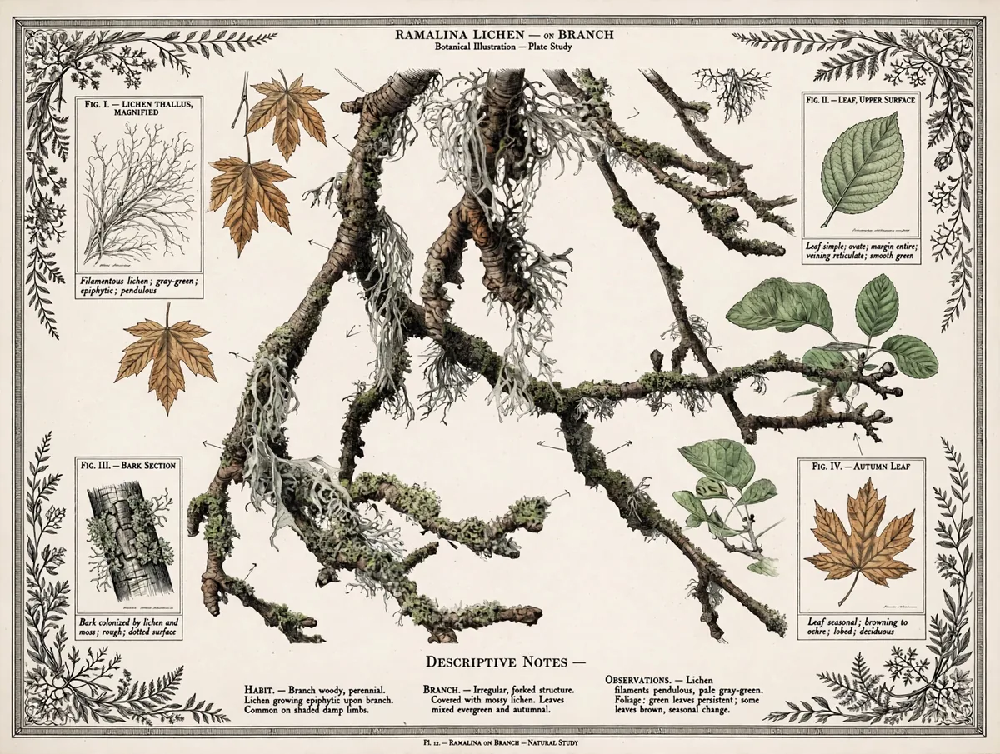
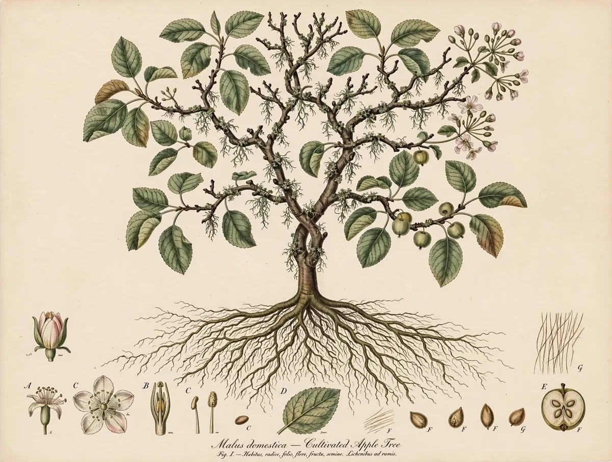
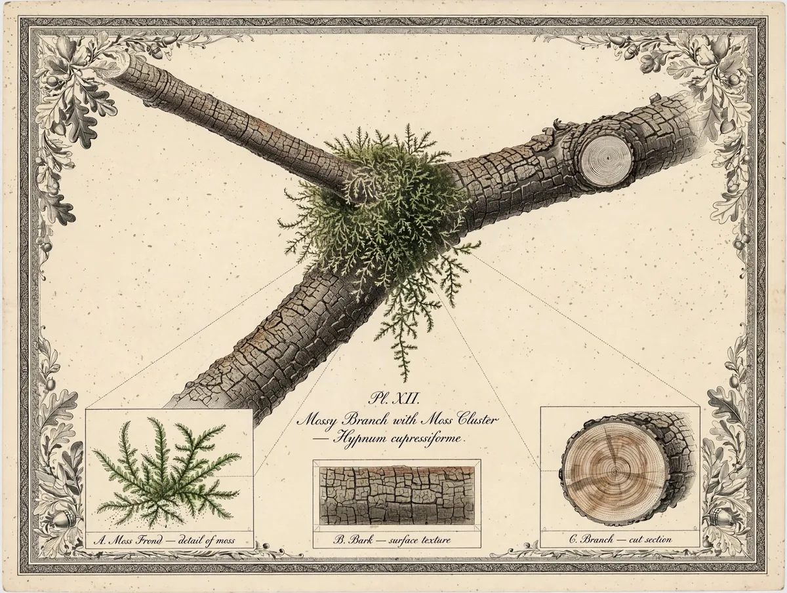
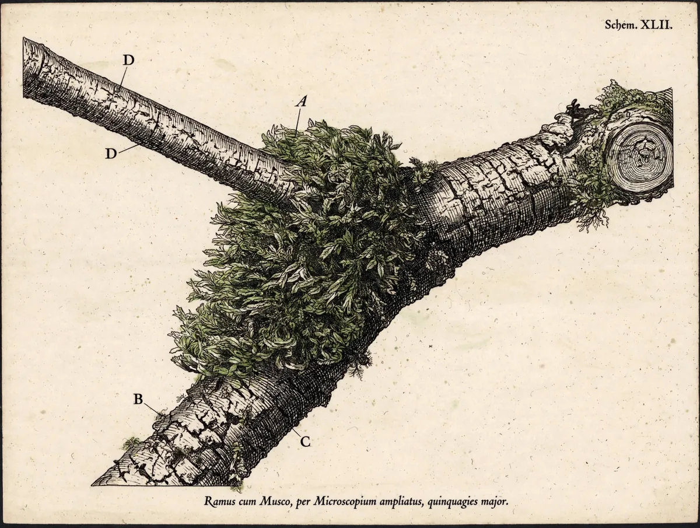
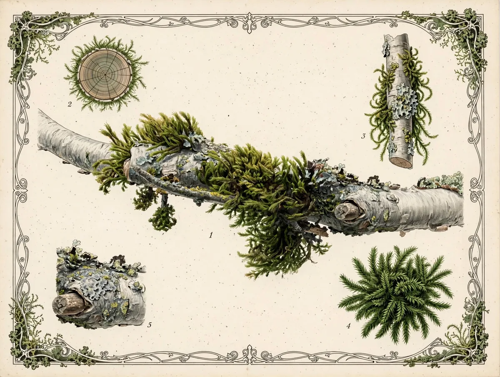

A personal page, kept like a field book
Small worlds,
drawn large.
I photograph moss, lichen, and bark — then develop the photos into vintage natural-history plates. This page collects the plates and a few of the other things I’m building.
Pl. I — Moss & lichen on a branch
The collection
Selected plates
Six studies from the moss & lichen batches, each drawn from a photograph.






Portfolio
Other work
-
Filter Studio / Fieldbook
An Android “plate camera” that develops photos into natural-history plates and files them into field books. Kotlin, Compose, CameraX, FastAPI — built to be portfolio-quality whether or not it ever earns a dime.
-
Illustration Prompt Library
Thirty-six reverse-engineered historical illustration styles — lithograph, engraving, botanical poster, monograph plate — each distilled into a reusable prompt system with plain-English filter names.
-
Science Posters
A growing gallery of vintage-style scientific plates drawn from my own photographs — bark, lichen, fungi, and the small overlooked things.
-
Clever Little Molecules
A ten-episode podcast in production, each episode narrated by the substance itself — the discoverers and the discovered, told from the molecule’s point of view.
-
“Your World”
An indie-pop / calm-hyperpop duet in progress — a human narrator and a glitchy, formant-shifted voice answering back.
About
A short note
I’m Michael. By day I work in medical imaging; the rest of the time I build things with AI as a creative partner — illustration systems, small apps, a podcast, a song.
I live in the Pacific Northwest, where the moss grows on everything and the lichen keeps excellent time. This page is an experiment: part portfolio, part field book, subject to revision the way all good field notes are.